Browse Incidents Tab
Incidents represent occurrences of real-time incidents such as Fire, building security, and so on. Real-time incidents can arise at any time, and must be managed as they occur.
The Browse Incidents tab displays in Operating mode when you select Applications > Notification in the Application View from the System Browser.

On selecting the BrowseIncidents tab, the following image displays:
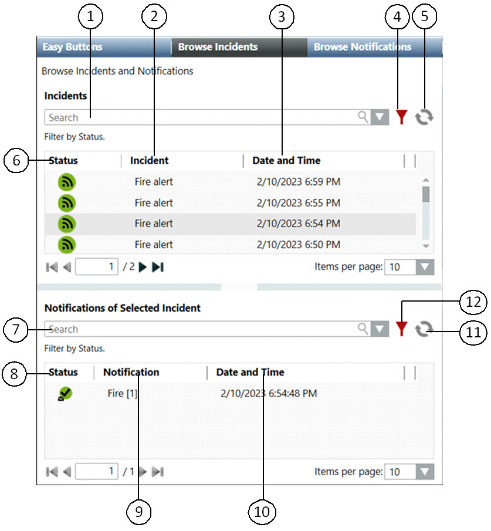
| Name | Description |
1 | Search | Allows the operator to search a particular incident from the list of initiated incidents. |
2 | Incident | Displays the description of the initiated incident. |
3 | Date and Time | Displays the date and time of incident initiation. |
4 | Advanced Search Options | Displays the advanced search options available for searching an initiated incident. |
5 | Refresh | Refreshes the window to update the list of initiated incidents. |
6 | Status | Displays the icons for the incident state and the pending message templates associated with the corresponding incident template. For example: denotes incident state. |
7 | Search | Allows the operator to search a particular notification from the list of notifications associated with the initiated incident. |
8 | Status | Displays the current state of the notification. |
9 | Notification | Displays the description of the notification. |
10 | Date and Time | Displays the launch date and time of the notification. |
11 | Refresh | Refreshes the window to update the list of launched notifications. |
12 | Advanced Search Options | Displays the advanced search options available for searching a notification. |
The details of the initiated incident display when the corresponding incident is selected:
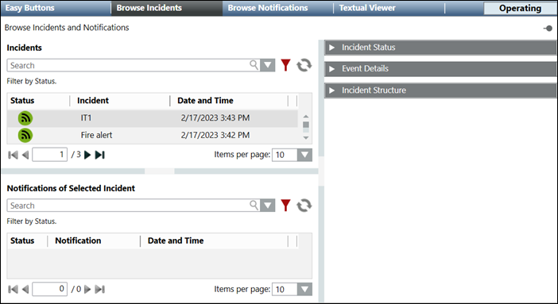
- Notifications of a Selected Incident: Displays the notification templates associated with the selected incident.
- Incident Status: Displays the status of the initiated incident and other details like type, owner, and incident initiation time. The Incident Status expander also displays options for suspending, resuming, canceling, and closing an initiated incident.
- Event Details: Displays the event information associated with an incident like alarm ID, Type, or cause.
- Incident Structure: Displays the structure of the initiated incident, for example, the name of the incident, the launch groups and the notification templates associated with the incident.
Notifications of a Selected Incident
After an incident is initiated and the Browse screen is displayed, the highest ordered notification from the incident template structure is selected by default and the details of the corresponding notification is displayed. Select a notification associated with an incident to view the details of the selected notification. The following image displays the details of a message template:
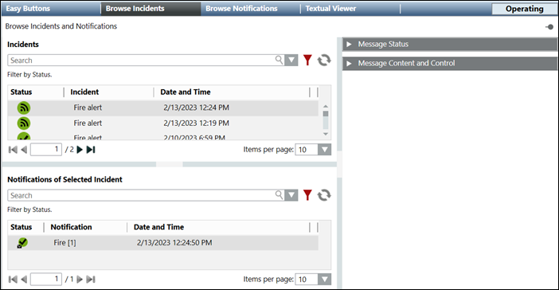
- Message Status: Displays the status of the selected message template and details like type, owner, Last action time, incident initiation time, priority, escalation, and total number of recipients. The Message Status expander also displays options for suspending, resuming, and canceling a message template.
NOTE: When a message template of status category is escalated, an event is generated. - Message Content and Control: Displays details of the message content.
Incident Status
The Incident Status expander displays the current incident state, incident details (such as incident type, owner), initiation time, and buttons to perform suspend, resume, cancel, all clear, and close operations on incidents.
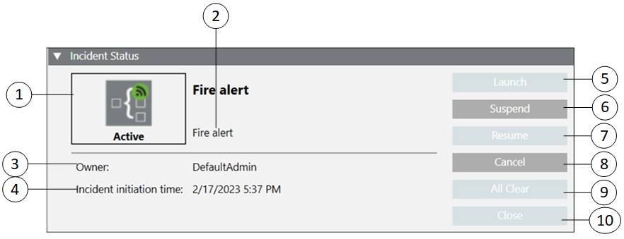
| Name | Description |
1 | Incident State | Displays the current incident state. |
2 | Type | Displays the incident type. For example, Fire alert. |
3 | Owner | Displays the ID of the user who initiated the incident. |
4 | Incident initiation time | Displays the time of incident initiation. |
5 | Launch | Launches notifications after specified delay. |
6 | Suspend | Suspends an active incident. |
7 | Resume | Resumes a suspended incident. |
8 | Cancel | Cancels an active or a suspended incident. |
9 | All Clear | Performs the All Clear operation. |
10 | Close | Closes a completed or canceled incident. |
Incident State | ||
| Name | Description |
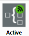 | Active | Displays when the incident is initiated and is in progress. |
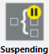 | Suspending | Displays when the user suspends the initiated incident and all the associated notifications are not yet suspended. This is an intermediate state between active and suspended. |
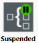 | Suspended | Displays when all of the notifications associated with the incident are suspended. |
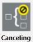 | Canceling | Displays when the user cancels the initiated incident and all the associated notifications are not yet canceled. Cancel either an active or a suspended incident. |
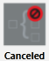 | Canceled | Displays when all notifications associated with the incident are canceled. |
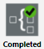 | Completed | Displays when all the associated notifications are either in the canceled or expired state. |
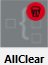 | All Clear | Displays after the incident transitions into the All Clear phase during which all notifications under the All Clear launch group are launched. |
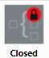 | Closed | Displays when the user closes a completed or canceled incident. |
| Initialized | Displays when the incident is initiated and its starting mode is either Manual or Auto. In case of Auto, only if a delay time is specified, the incident is in initialized state. |

Event Details
The Event Details expander displays the event information associated with an incident. Event details are displayed when an incident is triggered by an event.
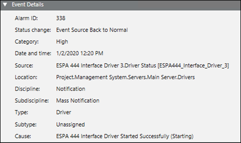
- Alarm ID: Displays the ID of generated alarm.
- Status Change: Displays the current event status.
- Category: Displays the event category, for example, Emergency.
- Date and time: Displays the time of event action.
- Source: Displays the source of event from where it is raised.
- Location: Displays the path of an event.
- Discipline: Displays event discipline.
- Subdiscipline: Displays event subdiscipline.
- Type: Displays the event type.
- Subtype: Displays the event subtype.
- Cause: Displays the cause of event.
Incident Structure
This section displays the structure of an incident.
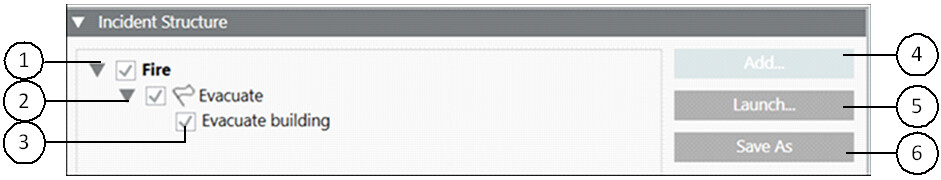
| Name | Description |
1 | Incident name | Displays the name of the incident. |
2 | Launch group | Displays the name of the launch group. For example, Evacuate. |
3 | Notification Template | Displays the name of the notification template. For example, Evacuate Building. |
4 | Add (Available only for Reno Plus license users) | Appends an additional notification under an existing launch group. |
5 | Launch (Available only for Reno Plus license users) | Allows the user to launch an additional notification under the existing initiated incident. |
6 | Save As (Available only for Reno Plus license users) | Allows the user to save an existing initiated incident under a new name. |
Advanced Search Options for an Incident
This section displays the advanced search options for an incident.
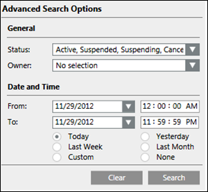
- Status: Searches for the incident according to its status. For example, active, suspended, suspending, canceled, canceling, completed, all clear, and closed.
- Owner: Displays the ID of the user who initiated the incident.
- From: Select the starting incident initiation date and time for searching the incident.
- To: Select the ending incident initiation date and time for searching the incident.
- Clear: Clears all the previous selection.
- Search: Starts the search operation.
Initiate Incident Tab
This section describes the workspace for initiating an incident.
For more information on the incident related procedures, see Incidents.
The Incident Templates tab displays in the Operating mode when you select Applications > Notifications > Incident Templates > [incident template] in the System Browser.
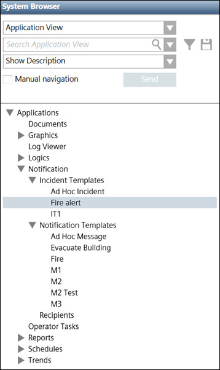
On clicking the Initiate Incident tab, the following image displays.
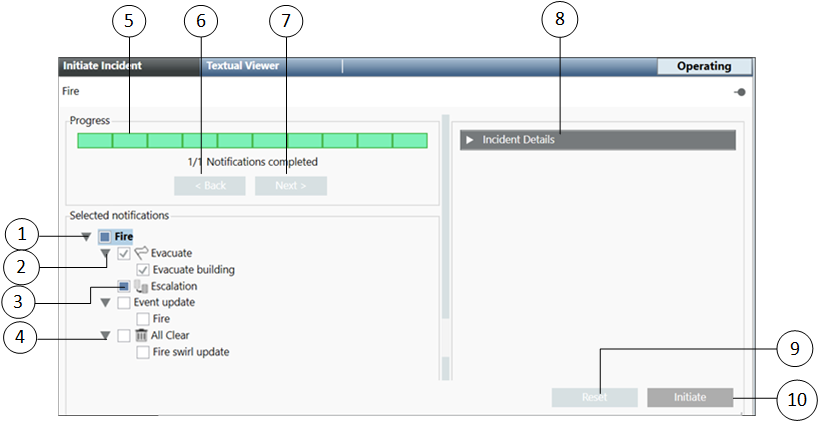
| Name | Description |
1 | Selected notifications | Displays the incident, the associated launch group, and the associated notifications (message templates). |
2 | Start launch group | Displays the start launch group. For example, 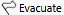 .A Start launch group is a special type of launch group which contains notifications. At the time of incident initiation the notifications added to a Start launch group are automatically selected. There can be multiple launch groups for an incident template, but only one Start launch group can be configured for each incident template. |
3 | Escalation launch group | Displays the Escalation launch group. For example, 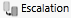 .An Escalation launch group contains the notification templates that are referenced for escalation within an incident template. |
4 | All Clear launch group | Displays the All Clear launch group. For example, . |
5 | Progress | Displays the progress of the initiating incident process. Once all the steps are successfully carried out, the gray strip turns green completely. |
6 | Back | Returns to the previous step. |
7 | Next | Performs the next step. |
8 | Incident Details expander | Displays the description, the extended description, and the type of the incident. The incident details section also allows the user to enter additional language-specific additional information about the Incident. |
9 | Reset | Cancels the incident initiation process. |
10 | Initiate | Initiates the incident. |
Incident Details
The Incident Details expander displays the details of an incident.
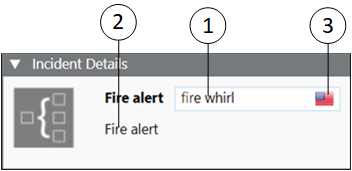
| Name | Description |
1 | Additional details | Type the language-specific additional details about the incident, for example, Fire whirl. |
2 | Extended description | Displays additional information for the incident apart from the description. This information is shown to the user during incident initiation, for example, Fire alert. |
3 | Language | Selects the language from the available list of languages. |
Incident Template Using Command
The Initiate Incident Template property by in the Operation tab enables the user to initiate incident template through automatable Desigo CC commands.
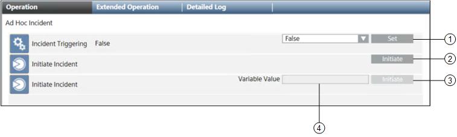
| Name | Description |
1 | Set | Allows you to automatically trigger incidents by selecting True in the drop-down list. To prevent automatic triggering of incidents, select False and thereafter click Set. |
2 | Initiate | Click Initiate to initiate the incident template. If the incident template does not contain the user variable this command option displays. |
3 | Initiate | Click Initiate to initiate the incident template. If the incident template contains the user variable this command option displays. |
4 | Variable value | Displays the Variable Value field if the selected incident template contains user variables. The variable text is used to fill all user variables present in the selected template during the initiate incident operation. |
NOTE: Only the notification templates that are assigned to the Start launch group are launched when you initiate an incident by using the Command option.
You can also control all configured incidents in the system using the Cancel All, Close All, Resume All, Suspend All, and Incident Triggering commands from the Extended Operation tab by selecting the Notification node in the System Browser.
Name | Description |
|---|---|
Cancel all incidents | Cancel all active incidents |
Close all incidents | Close all the incidents that are completed or cancelled |
Resume all incidents | Resume all the suspended incidents |
Suspend all incidents | Suspend all the active incidents |
Incidents triggering | Enable or disable the incidents triggering functionality. Set True to enable the trigger, set False to disable the trigger. |
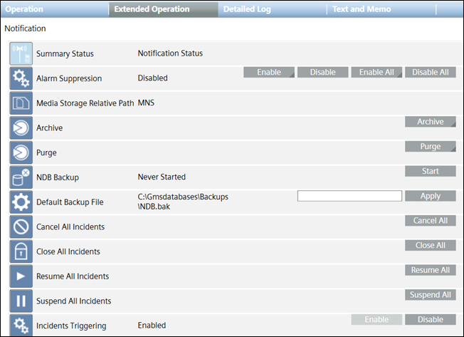
The notifications associated with the incident are of the Message templates type.
When the user selects the associated message template, the details of the message template display as shown in the following image:
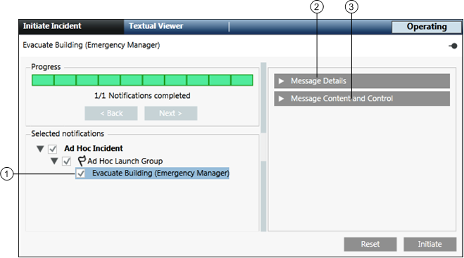
| Name | Description |
1 | Selected message template | Displays the selected message template. |
2 | Message details | Displays the details of the selected message. |
3 | Message content and control | Displays the details of the message content. |
Message Details
The MessageDetails section displays the details of a message.
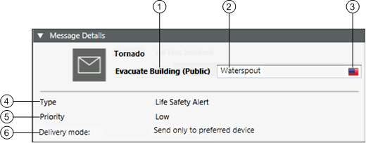
| Name | Description |
1 | Name of the message template | Displays the name of the message template. For example, Evacuate Building (Public). |
2 | Additional details | Allows the user to type the language-specific additional details for the message. For example, Waterspout. |
3 | Language | Allows the user to select the language from the available list of languages. |
4 | Type | Displays the message type. For example, Life Safety Alert. |
5 | Priority | Displays the priority of the message. |
6 | Delivery mode | Displays the option selected at the time of the message template configuration for the display of the message on the recipient devices. For example, send to devices in sequence upon failure. |
Message Content and Control
This expander displays the message content details.

| Name | Description |
1 | Show text content | Displays the textual content of the message template. |
2 | Show audio content | Displays the audio content of the message template. |
3 | Show other file content | Displays the other file content of the message template. |
4 | Show recipients content | Displays the list of recipients of the message template. |
5 | Show control options content | Displays the priority and priority tolerance of the message template. |
6 | Select language for content configuration | Allows the user to select the language-specific content entered at the time of message configuration. |
7 | Update (Available only for Reno Plus license users) | Allows the user to update the control options, recipients, audio, other file contents and user variables in text content. |
8 | Launch copy (Available only for Reno Plus license users) | Allows the user to launch the message under an existing incident. |
9 | Save as (Available only for Reno Plus license users) | Allows the user to save the message template under a new name. |
Show the Text Content of a Message Template
This section displays the textual content of a message.

- Select Language for Content Configuration: Allows the user to select the language-specific content entered at the time of message configuration.
- Variable: Displays the variable entered at the time of message configuration.
- Value: Allows the user to enter the value of event variables and user variables. The operator cannot change the value of system variables.
- Title: Displays the message title. For example, Fire.
- Short Text: Displays the short description of the message.
- Long Text: Displays the detailed description of the message.
Show the Audio Content of a Message Template
This section displays the audio content of a message.
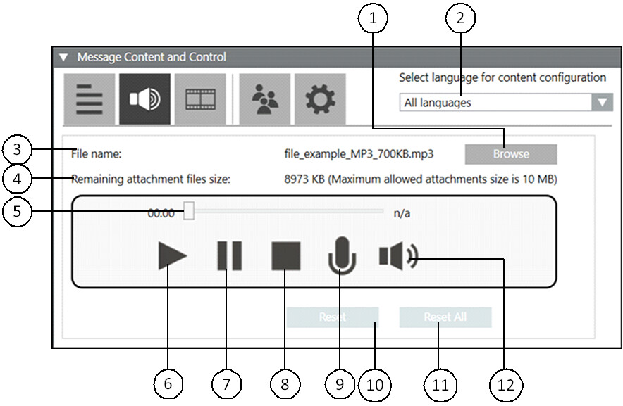
| Name | Description |
1 | Browse | Allows the user to navigate to the desired location for the audio file selection. |
2 | Select Language for Content Configuration | Allows the user to select the language-specific content entered at the time of message configuration. |
3 | File name | Displays the name of the audio file. |
4 | Remaining attachment files size | Displays the available file size in KB. |
5 | Audio slider | Displays the progress of the audio file while the corresponding audio file is being played. |
6 | Play | Plays the audio file. |
7 | Pause | Pauses the audio file. |
8 | Stop | Stops the audio file. |
9 | Record | Records an audio file. |
10 | Reset | Resets only the audio file configured for the currently selected language. |
11 | Reset all | Resets the audio file content configured for all languages. |
12 | Volume | Increases or decreases the sound level output of the audio file. |
Show the Other File Content of a Message Template
This section displays the other file content of a message.

- Browse: Allows the user to navigate to the desired location for the other file selection.
- Select Language for Content Configuration: Allows the user to select the language-specific content entered at the time of message configuration.
- Files: Displays the name of the file.
- Remaining attachment files size: Displays the available file size in KB.
NOTE: The maximum allowed attachment size is 10MB. - Reset: Resets only the multimedia file configured for the currently selected language.
- Reset All: Resets the file content (video, pdf or text file fields) configured for all languages.
- View: Allows the user to view the multimedia file.
Show the Recipients Content of a Message Template
This section displays the list of the recipients of a message.
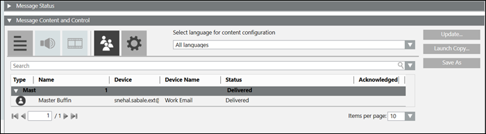
- Select Language for Content Configuration: Allows the user to select the language-specific content entered at the time of message configuration.
- Search: Search for a particular recipients from the list of recipients.
- Type: Displays the icons of a recipient type for the recipients.
- Name: Displays the names of the recipients.
- Device: Displays the device address associated with the recipient.
- Device Name: Displays the device type associated with the recipient.
- Status: Displays the message delivery status to the corresponding recipient.
The not resolvable status appears in following scenarios, - Corresponding driver is not created.
- Corresponding driver is created but does not navigates to the recipient editor before sending the notification.
- Acknowledged: Displays the acknowledgment status of the recipient for the message with acknowledgment settings configured.
 - Represents that the recipient user has acknowledged the receipt of message.
- Represents that the recipient user has acknowledged the receipt of message.
Show the Control Options Content of a Message Template
This section displays the control options of a message.

- Select Language for Content Configuration: Allows the user to select the language-specific content entered at the time of message configuration.
- Priority: Allows the user to select the priority of the message.
- Expiration: Allows the user to select the expiration time for the message.
- Acknowledgment: Allows the user to request the collection of acknowledgments.
- Enable escalation: Select the check box to enable escalation configuration.
- Escalation rule: Allows the user to:
- select the operator like less than <, greater than >, and so on from the drop-down list.
- enter the value.
- select the percentage % or exact value indicator # from the drop-down list.
- select the condition for escalation, for example, Delivery fails from the drop-down list.
- Notification template: For message templates that are part of an incident template, this field allows users to select a targeted notification template from the drop-down list. Alternatively, the user can drag a stand-alone notification template from the System Browser hierarchy to configure the targeted notification template.
NOTE: Notification templates cannot be dragged for escalation in Windows App clients. For Windows App clients, users need to select a targeted notification template from the drop-down list. - Anonymous acknowledgments: Allows the user to include the acknowledgments that are not mapped to any recipient user as valid acknowledgments to be considered for the escalation rule.
- Delivery mode: Allows the user to select the mode of delivery of the message to the recipient user.
- Acknowledgment Period: Allows the user to define the time period, starting from the start of delivery of a message, during which the system will collect and evaluate the acknowledgments.